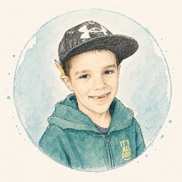

Max's Math Lab ✨
Ready for a math adventure?
Pick a character! You can add your initials, too.
🌈 Pick your first world!
🔎 When should your secret world unlock?
Pick a world!
Tap a world to play. Complete missions to find new worlds!

Adventure begins!
Solve math challenges to explore.
You've got this!
Your learning path chooses math you're ready for.
Type your answer left to right. You can tap any number box to change it.
You can always use your usual way, too! 💛
Write with your finger or Apple Pencil.
Adventure unlocked!
🎒 Your explorer journey Tap to see your progress ✨
My math skills
Need help? Tap Teach me. Take your time!
🌎 My worlds
Pick a world! You can change it any time.
🧠 Mental Math Playground
Move the counters to make a ten! No timer, scores or wrong answers. Just try things.
Tap a loose counter or drag it into the first frame. Make a ten!
MAX MODE
THINK IT. BUILD IT. TEST IT. TWEAK IT.
An original, unofficial family-made tribute. Not affiliated with or endorsed by CrunchLabs or Mark Rober.
You cracked the map code. Welcome to your invention headquarters. Real engineers make guesses, test inventions, learn what happened, and try again!
🚀 PING-PONG LAUNCH LAB
Your job: launch a ping-pong ball so it lands close to the target. Change one thing, test again, and see what happens.
🌉 SQUIRREL SUPPLY BRIDGE
Help an adventurous squirrel deliver supplies by building a bridge strong enough to hold a load. Real engineers also try to build efficiently, without extra materials.
⚙️ CHAIN REACTION MACHINE
Complete each math circuit to power a wonderfully ridiculous invention. Every correct connection starts another part of the machine!